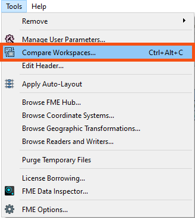
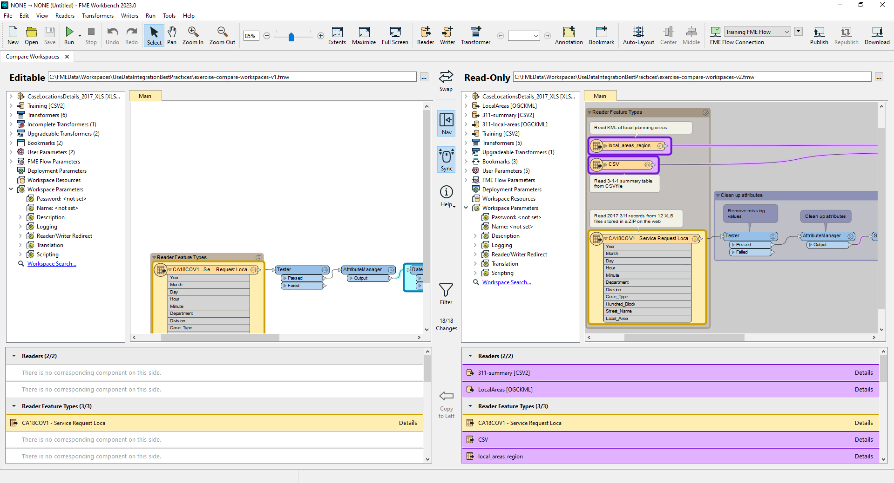
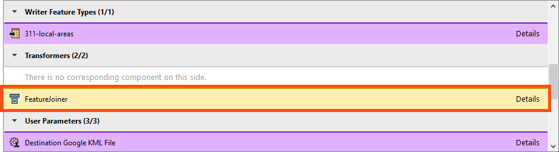
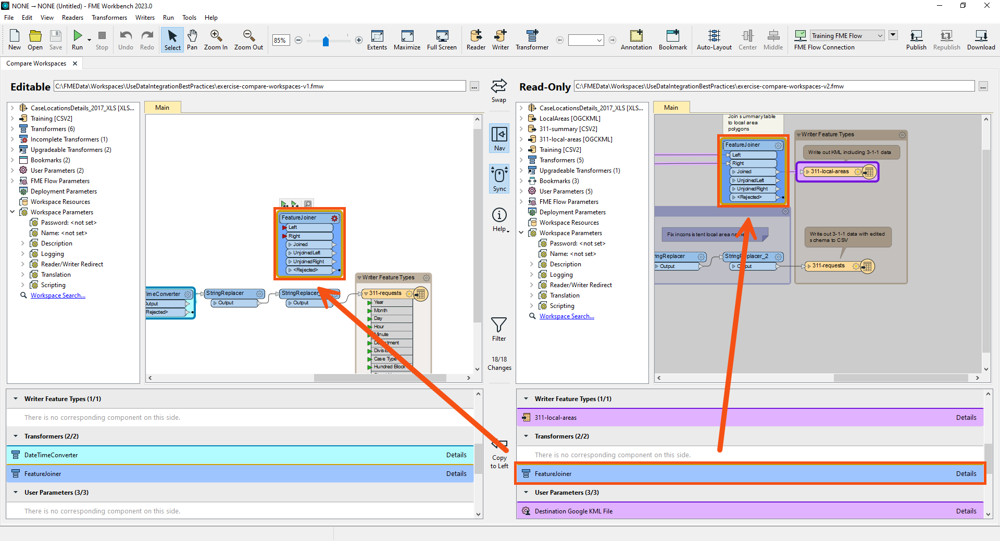
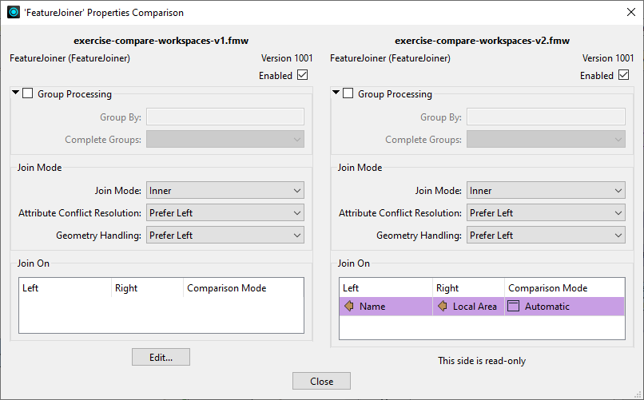
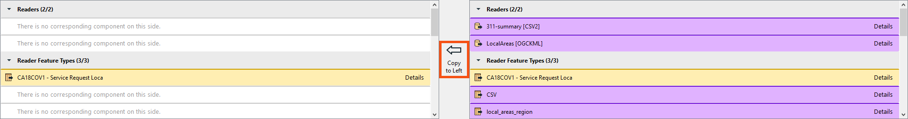
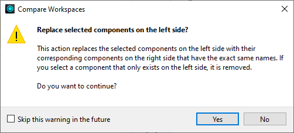

After completing this lesson, you’ll be able to:
You created a workspace to do attribute cleanup on 3-1-1 call data. 3-1-1 is a special phone number used by municipalities in Canada and the United States to manage non-emergency municipal service calls.
A few weeks later, your colleague modified the workspace to summarize the call records and join them to spatial data. They’ve added a few feature types and added/modified transformers. Now, you have two versions and want to rectify them into an accepted shared workspace version. You can use FME 2023.0’s Workspace Comparison tool for this task.
Open the starting workspace in FME Workbench (2023.0 or later).
Click Tools > Compare Workspaces.

Add the v1 workspace as the Editable workspace, and exercise-compare-workspaces-v2.fmw (C:\FMEData\Workspaces\UseDataIntegrationBestPractices\exercise-compare-workspaces-v2.fmw)as the Read-only workspace.

Then click OK.
The workspaces open in the Compare Workspaces tab.

Look at the list of differences below the Read-Only workspace.
One of the differences under Transformers reports that the FeatureJoiner was modified (yellow means modified). Find it in the list.

After finding it, click it once to highlight the transformer with changes on the canvas.

Double-click the FeatureJoiner change in the list of changes to open the 'FeatureJoiner' Properties Comparison dialog.

Here, you can confirm that in the v1 workspace, the FeatureJoiner is not configured. However, the v2 workspace joins tabular CSV data of 3-1-1 call records to local planning area polygons read from a KML file. The shared key is the name of the local planning area stored in attributes Name and Local Area, respectively.
Click Close.
Browse the rest of the differences. It looks like all of them are necessary for the new workspace that summarizes calls by local area.
Copy all changes from the v2 to v1 workspace by first selecting all the objects on the Read-Only canvas. You can do that by clicking and dragging around all objects on the canvas or using the Ctrl+A shortcut after selecting a single change in the list of changes. Then click the Copy To Left Button between the two lists of changes:

FME will prompt you to ensure you want to merge the changes. Click OK.

You will see the new, modified version of the workspace. You can save it to store the merged changes.
In this scenario, you could also have decided to compare changes, confirm they were all correct, delete the v1 workspace, and continue using v2. Which method you choose depends on if you want to accept all changes or just some of them (essentially creating a “fork” or parallel development path) and if you maintain separate copies of similar workspaces in your organization.
We’d appreciate your filling out this quick optional survey on this new feature. Your answers will not affect your score on the course; take the Quiz below to complete the course.